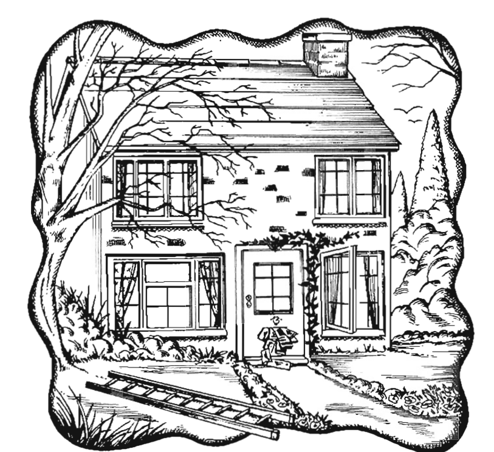
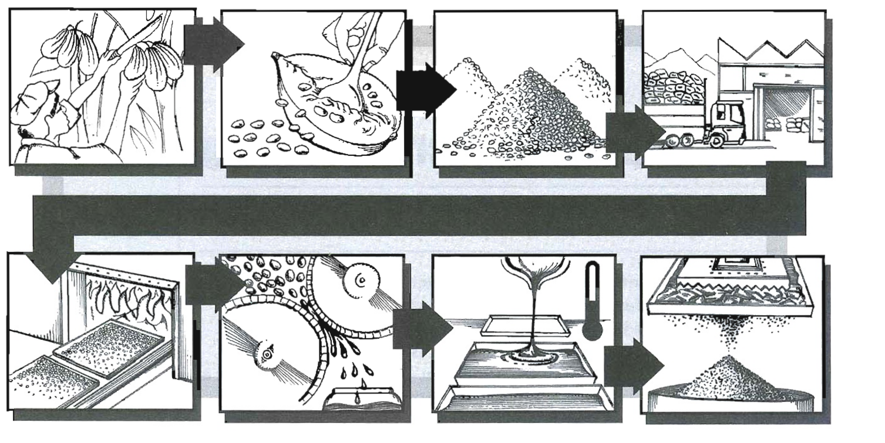

Pre-listening
You are going to hear part of a radio programme about making sure your home is safe when you are away. Before you listen, look at the picture. What do you think the radio programme will mention?

Look carefully at the house — what has been left unsafe?
Listen and see if you were right — Track 20
Track 28 — 20i
Context listening — radio programme on protecting your home
Show the problems mentioned
Listen again and complete the advice below — Track 20
How to protect your home
Outdoors
Indoors
Look at your answers and find the relative pronouns
Underline all of the relative pronouns in your Exercise 3 answers (where, which, who, that), then answer these questions.
Relative clauses give information about a noun (or noun phrase). They are linked to the noun by a relative pronoun (e.g. who, which). The relative pronoun can be either the subject or the object of the clause, and we do not use another pronoun in the clause to refer to the noun:
- Why not install lights which have a timer? (not
Why not install lights which they have a timer?)
the man sitting beside me (= the man who is sitting beside me)
the food kept in the fridge (= the food which is kept in the fridge)
B1 — Relative pronouns
| Pronoun | Refers to | Example |
|---|---|---|
| who | people | Please welcome Mike Bowers, who is going to talk to us about how to look after your home. |
| which | things | These are dangerous if you live in a flat which is in a large high-rise building. |
| that | people or things | Find someone that can check on your home while you're away. Store away any objects that could become damaging missiles. |
| where | places | This is your home, the place where you keep your most treasured possessions. |
| when | times | Programme them to come on at times when you would normally be home. |
| whose | possession | You're a person whose job involves a lot of travel. He lives in an old house, whose roof needs repairing. |
| why | after the reason/reasons | There are often very good reasons why one house is burgled and another is not. |
B2 — Defining relative clauses
Defining relative clauses give information after a noun to identify the noun more clearly:
- Find someone who can collect your mail for you.
- Store away any objects that could become damaging missiles if it gets windy. (the relative clause identifies the type of objects)
Without these relative clauses, it is unclear which person, place or thing we are referring to:
- Store away any objects if it gets windy. (we do not know which objects)
Maybe there's a neighbour (that) you can ask. (neighbour is the object of the verb)
In the evening, a house that's very dark can really stand out. (house is the subject of the verb: not
B3 — Non-defining relative clauses
Non-defining relative clauses add extra, non-essential information about something. Compare:
Non-defining
I applied to the university, which is located in the centre of the city.
There is only one university, so its location is extra information.
Defining
I applied to the university which is located in the centre of the city.
There is another university which is not in the centre of the city.
Non-defining relative clauses are more common in written language than in spoken language.
With non-defining relative clauses
- we do not use the relative pronoun that: The burglars got in through the kitchen window, which the owners had forgotten to shut. (not
the kitchen window, that the owners…) - we separate the relative clause from the main clause with commas. There may be two commas or one comma depending on whether the relative clause comes in the middle of a sentence or at the end: A letterbox can become full of uncollected letters, which is a great help to a burglar. / Mr Smith, who was my primary school teacher, got married last week.
- we cannot leave out the relative pronoun: My new house, which I have just redecorated, is much larger than my old house. (not
My new house, I have just redecorated,…) - the relative pronoun can refer to a single noun phrase or to a whole clause: My neighbour, who lives upstairs, often looks after my flat. (who refers to my neighbour) / Some people seem to think it's just a matter of locking all the doors, which is fine as long as there are no nasty storms while you are away. (which refers to the whole of the first phrase)
Key differences
Defining relative clauses
- identify the thing that you are talking about
- that can replace who or which
- the relative pronoun can be left out if it refers to the object
- no commas
Non-defining relative clauses
- give additional, non-essential information
- that cannot be used
- the relative pronoun cannot be left out
- must have commas
B4 — Prepositions
When prepositions are used with relative clauses they usually come at the end of the clause in spoken English:
- You may have a neighbour that you can rely on. (informal)
In formal style the preposition can be placed before the relative pronouns which or whom:
- I was unsuccessful in obtaining a place at any of the universities to which I applied.
- My boss, for whom I have worked for over 30 years, has decided to retire.
Grammar extra: Common collocations with relative pronouns
We often use the expression the one with defining relative clauses:
- He's the one who suggested I became a teacher.
- My father is the one that taught me to play the piano.
- That house is the one where I grew up.
Where can be used after expressions such as the situation, the stage or the point:
- We were in a situation where there were no easy solutions.
- I'm almost at the stage where I'm ready to quit my job and go into business for myself.
- I've reached the point where I feel I should just give up.
Match the beginnings (1–10) and endings (a–j), and join them with a relative pronoun
Rewrite the sentences as single sentences using non-defining relative clauses
Find and correct the mistake with relative clauses in each email extract
How chocolate is made — add the relative clauses (a–i) and the relative pronoun

The stages of chocolate production, from cacao pod to cocoa powder.
Chocolate's varied flavours, colours, shapes and textures result from different recipe traditions 1 which … g (example). The essential ingredient in all chocolate is cocoa, which is made from the cream-coloured beans 2 . The cacao tree, 3 , produces a fruit about the size of a small pineapple, 4 .
After harvesting, the cocoa beans are removed from the pods and piled in heaps 5 . The dried beans are then transported to factories 6 . The shells are then removed and the beans are ground into chocolate liquor – a thick brown liquid 7 . This liquor contains a high percentage of fat (cocoa butter), 8 . The solid block of cocoa that remains is then made into a powder 9 , or is mixed back with some of the cocoa butter, sugar and other flavour such as vanilla to make the different kinds of chocolate.
Academic Reading
Robotic approach to crop breeding
Jennifer Manyweathers takes a look at a robot that is being used to identify drought-tolerant crop varieties
Questions 1–4 — Complete the sentences
Questions 5–12 — Locating information
1 Dr Chris Lambrides, a research fellow at the University of Queensland, is nearing the end of a project that aims to develop more drought-tolerant sunflowers by selecting flowers that use water more efficiently.
2 … the research team discovered that its initial approach did not cater for changes in wind speed, which could not be controlled as an experimental variable.
3 It has a garage on the track, where it waits until the light intensity is high enough to give useful results.
4 The main difficulty faced by the research group was to find an agronomist who could grow the perfect crop of sunflowers.
5 The team and their robot have already made a major breakthrough in the Australian wheat industry with Drysdale Wheat, which signalled the arrival of a new technique for selecting drought-resistant species.